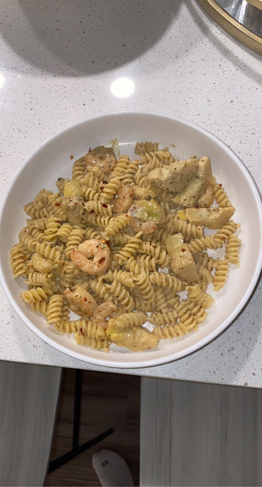

Since the COIVD-19 pandemic, I have worked tirelessly to find hobbies that excite me. I have always been into cooking; however, when quarantine hit, I really made an effort to expand my knowledge about food beyond simple recipes. This passion carried on into this school year, especially because I had my own kitchen to experiment in. In this blog I will share with you what I believe to be the best and easiest shrimp pasta recipe.  ##Getting Started: This is a two-pot recipe solely due to the fact that that pasta needs to be cooked at the same time as the sauce. This recipe works with ingredients you have around your house to use up leftover veggies and incorporate things you always have around your kitchen. For this recipe you will need pasta of your choice (I prefer a farfalle), any kind of milk (I use Almond milk!), butter, parmesan shredded or grated, shrimp, garlic powder, onion powder, red pepper flakes, white wine, lemon juice, italian seasoning, cream cheese, extra add ins (I usually add mushrooms, artichokes, and sun dried tomatoes!)
##Steps: To begin, heat a pot of water to a boil and begin cooking pasta for the time specified on the box. Then, heat a pan with butter until it is sizzling. Once the butter is sizzling, add the shrimp and season liberally with onion powder, garlic powder, italian seasoning, salt, and pepper. Once cooked, add white wine to deglaze the pan and t he add-in vegetables. Turn the heat to low and add some milk. Add as much as you want to create the amount of sauce you want, I usually do about 1/3 of a cup. Then, add two spoonfulls of cream cheese and about 2 tablespoons of parmesan cheese along with the lemon juice. Mix until combined and let the sauce melt together. Keep an eye on the sauce. If the sauce is too thin add more cream cheese and parmesan, if it is too thick, add pasta water. Once the pasta is cooked, add the pasta to the sauce and top with parmesan and red pepper flakes. Bon Appetit!